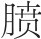
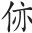
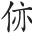

这一章我们主要学习《灵枢经》中所记载的小针体系。学习前我还是禁不住叮嘱一下，请大家一定要忘掉以前自己所学的针灸学知识来读经典，这些知识既包括穴位的功效、花哨的手法，也包括那些玄而又玄的理论等。中药没有功效，穴位也不会有特定的功效，药物的功用由其气味决定，穴位的功用一样是由其所在经与所属特定穴的属性决定。花哨的手法只有在掌握了针灸原理后应用才会有效果，如果不掌握原理，即使做得外形再像也不会有什么效果，在学会了真正的补虚泻实的原理后，你会用最简单的手法达到“补则实、泻则虚”的效果，虽然外形上看可能手法较单调笨拙，但是会有出奇的效果。现在流行很多玄而又玄的针灸理论，这些理论烦琐得让人难以驾驭，而经典理论非常朴素，听起来很平淡，但用起来却非常神奇。
当然在学习之前尤其要忘掉诸如如何松解肌肉组织粘连，如何刺激神经缓解神经根水肿，如何缓解肌肉紧张，如何缓解神经压迫症状等知识。现在兴起了很多新针法，这些新针法多源自于西医的解剖理论，但他们总要拿几句《内经》中的话来做大旗，提升层次。我想说的是中医所看到的人与西医看到的人不是同一个人，现在西医看到的人体是通过解剖、生理、病理综合信息而得到的一个直观的认识；中医则不同，中医看到的人体是肉体、能量、精神的集合体，即所谓精、气、神。如果我们用针灸或其他工具缓解肌肉粘连等西医认为的病理因素，那么这种手段就已经称不上是中医治疗了，这根针灸针也只是如西医手术刀一样的工具，而非中医眼中“上合之于天，下合之于地，中合之于人”的一件神器，这样也体现不出针灸治病的特点。所以请读者朋友放下自己的心，先从头到尾读两遍《灵枢经》，以便我们可以更好地交流《灵枢经》中的针道。
很多人或许会说我已经通读过《灵枢经》很多次了，但针灸治疗水平还是停留在松解肌肉粘连之类的层次上，很多人甚至会毫不留情地说《灵枢经》所记录的针刺方法未必有效，就以耳鸣病人为例，将《灵枢经》中所有记载治疗耳鸣的针刺方法都试验一遍，结果只是个别有效，大部分没效。还有如果遵照《灵枢经》的记载“著痹不去，久寒不已，卒取其三里”去操作，只要对自己的临床效果负责任，就会发现大部分的久寒痹证用火针刺足三里没有什么效果。在很多人的心里，经典就是这一段段具体什么病怎么针灸的记载和一些不着边际的话语。如果单纯用经典中记录“术”的层面的方法针刺，在疗效上确实没有松解粘连或后世的各种歌赋实用，我们不能不尊重事实而盲目抬高经典。经典之所以高明，不是因为其记载的具体治病方法高明，而是其为我们建立了正确对待疾病的思维，即《内经》中传承了古人留下来的“医道”。《内经》记载了针刺为道与术的结合，既谈论了针刺的“道”，又谈论了很多病的具体针刺方法，但是如果没掌握重点的“道”，这些具体刺法就都不会有用。因此首要任务就是先找到《灵枢经》中关于针刺之道的篇章，理解这些篇章所传达的道，然后再以这几篇的内容为核心骨架，将其他具体的治法填充到框架里，如此针刺体系才能骨高肉满，治法虽多却有一个一以贯之的主线，具体临床针刺治病才能游刃有余。
如果通读《灵枢经》就会发现其中很多内容是讲具体病的治法，是对具体现象的解释，像《热病》《杂病》《厥病》《寒热》《贼风》等，都是在谈论具体的病怎么治疗；《论勇》《五变》《口问》《淫邪发梦》等是对人体几个常见现象做的一些解释，这些篇章在学习时可以先放一下，待掌握主线之后再细细体会。这样读经就有了主次，以此梳理下来可以很容易找到最核心的讲针道的篇章——《九针十二原》。《九针十二原》为《灵枢经》的第一篇，文字古奥，全为概括性文字，概括了针之道、刺之道、针害等，是“针道”的总提纲。针道是理论总结，在具体应用上最核心的篇章是《终始》篇。如果非要找到最重要的两章，很明显就是《九针十二原》与《终始》了。《九针十二原》的重要性不容置疑，《终始》篇的重要性在《内经》里被提到多次，“九针之玄，要在终始；故能知终始，一言而毕，不知终始，针道咸绝。”“凡刺之道，毕于终始。”这里的“终始”并非后世所说的经络的起和止，而是《灵枢经》第九篇《终始》。古人用一根小针在人体上扎一扎就会出现神奇的疗效，能将复杂的天地万物用一个理来贯穿，这在外行人看起来是很玄的事，而这么玄的事关键就在《终始》这篇。只要掌握了《终始》篇，就可以通过实践来领悟医道，通过针灸的神奇效果确信医道的真实不虚，故而这一篇至关重要，不掌握这一篇，针道就只是理论，如果没有实践的验证那理论就是空洞的，没有说服性的。
从事针灸的医生往往容易走极端，要么针灸越搞越玄，用些玄而又玄且不能说清的理论使初学针灸者望而却步；要么就将针灸越搞越实际，不讲中医理论，全用西医知识来解释，使得大量的初学针灸者改学细致入微的局部解剖而不是中医经典。《终始》篇之所以为学习针灸的关键，就是因为这一篇不仅特别实用，直接从针灸的核心切入，而且又处处不离古人朴素的世界观，不离中医之道。针灸取效最核心的只有三点：①准确的辨证；②精准的取穴；③到位的补泻。无论理论多么玄妙，落实到针灸临床要想取得好的效果，这三者缺一不可。首先是准确无误地判断病人的病机所在，脏腑经络虚实情况；然后通过病人的病情，精准地知道该取用哪个穴位来纠正人体的偏差；最后在穴位上针灸，通过手法达到补则实泻则虚的效果，使本来虚的经络补实，使本来实的经络泻虚。这三个针灸的核心都详细记录在《终始》里，非常重要。然而后世很多不明“道”的针灸师，辨证求奇却不能精准选对穴位，手法花哨却达不到补虚泻实的作用。如果能对《灵枢经》深入学习，将经典的思维方式变成常规，就能体会到“能知终始，一言而毕”的深意。之所以能“一言而毕”，就是掌握了这种思维，拥有这种思维的人用一句话便可直指其精华，但没有这种思维的人听起来不过就是一句空话，乍听有道理，仔细分析又不知所云。“一言而毕”的说法并不夸张，是非常实在的。虽然同样说这句“精华”的话，如果是没有得道的人说出来，很容易让人感觉做作，但是得道的人说，却让人感觉非常真实，有分量，而且能产生一些共鸣。
在讨论《终始》之前要做一个准备，因为在《终始》中有言：不能直接传授给别人该篇的内容，“必先通十二经脉之所生病，而后可得传于《终始》矣”。所以在学习《终始》之前，必须先熟练掌握《灵枢经·经脉》中所记载的每一经的是动病与所生病。除了这些还需要记住《灵枢经·本输》所要求掌握的内容：“凡刺之道，必通十二经络之所终始，络脉之所别处，五输之所留，六腑之所与合，四时之所出入，五脏之所溜处，阔数之度，浅深之状，高下所至。”具体知识就是十二经脉的循行路线，十五大络的分歧位置，五输穴的定位，六腑下合穴的位置，随着四时变化经脉的变化，五脏之间的气血流注次序，五脏背俞穴的位置，脏腑之间的相合关系，每条经脉的长度，每个骨骼的长度，每条经脉的深浅。这些都是针刺的基础，每个知识都必须牢牢掌握，缺一不可。如果还没有掌握这些基本功，建议先补习一下，具备了这些知识才可以畅谈《灵枢经·终始》。
“终始者，经脉为纪。持其脉口人迎，以知阴阳有余不足，平与不平，天道毕矣。所谓平人者不病，不病者，脉口人迎应四时也，上下相应而俱往来也，六经之脉不结动也，本末之寒温相守司也，形肉血气必相称也，是谓平人。”
察色按脉先别阴阳。无论是针刺还是开中药，诊病之首就是判断病人阴阳的盛衰，最先是通过人迎气口诊法来确定。如果是正常人，应该满足下面的要求：①脉口与人迎大小相等，并与四时变化相应，春夏人迎微大，秋冬气口微大。这说明阴阳匀平，未相倾。②上下相应，即寸关尺三部没有偏差，并且应四时春微弦、夏微洪、秋微毛、冬微石。③六经脉不结动，即手三脉寸口、合谷、神门，足三脉冲阳、太冲、太溪，这六脉大小齐等，没有独大独小，没有结代。④本末寒温一致。“木”字下面加一横为“本”，上面加一横为“末”，树根为树之本，《灵枢经·根结》中言四肢末梢为经脉的根，头面腰腹为经脉的结，本末寒温一致就是全身上下体温一致，无内外寒温差异。⑤形肉血气相称，即脉与形体相称，稍胖之人脉稍沉，稍瘦之人脉稍浮等。满足上面五个条件，说明人体气血阴阳平衡，可以算是健康人，即平人。
“少气者，脉口人迎俱少，而不称尺寸也。如是者，则阴阳俱不足，补阳则阴竭，泻阴则阳脱。如是者，可将以甘药，不可饮以至剂。如此者弗久不已，因而泻之，则五脏气坏矣。”
并非所有人都适合针刺，因为小针虽为细物，但调动人体气血的力量巨大，在人体气血非常少的时候，不适合针刺。这些人的脉诊特点是脉口人迎都少，这里的少是指脉管里的气血少，而非指脉搏的大小，即关前一分的脉或是特别细，或是只摸到软软的浮大的脉管，感觉脉管内空空如也。张仲景形容这两种脉一种是“脉萦萦如蜘蛛丝”，一种是“脉瞥瞥如羹上肥”。摸到这两种脉说明人体当下非常虚劳，《金匮要略》中言“脉大为劳，极虚亦为劳”，这种人气血非常少，没有物质可以化生气血，也就没有办法调动气血，因此治疗只可用味甘且静的中药填补气血，不可用动气的中药，也不可用针动气，仲景的甘麦大枣汤就是一个非常好的填补气血的方剂。并且治疗这种病需要待七日一阳来复方可有起色，一两日难图有效。这种病人的一线生机全系于医者之手，一旦医生用药或用针动气而泄气，那病人就很难康复了。如果脉象极虚但稍有胃气，可以用《灵枢经·海论》中记载的针刺四海的方法治疗，不过，现在临床中很难见到不宜针刺的虚劳病了。
“人迎一盛，病在足少阳；一盛而躁，病在手少阳。人迎二盛，病在足太阳；二盛而躁，病在手太阳。人迎三盛，病在足阳明；三盛而躁，病在手阳明。人迎四盛，且大且数，名曰溢阳，溢阳为外格。脉口一盛，病在足厥阴；一盛而躁，在手心主。脉口二盛，病在足少阴；二盛而躁，在手少阴。脉口三盛，病在足太阴；三盛而躁，在手太阴。脉口四盛，且大且数者，名曰溢阴，溢阴为内关，内关不通死不治。人迎与太阴脉口俱盛四倍以上，命曰关格，关格者与之短期。”
人迎气口诊脉法在前面已进行了详细讲解。人迎一盛说明病人当下处于少阳状态，同时也说明人体所有经脉中，最盛的一条经脉是足少阳胆经，气血偏于足少阳，那么与这条经正相对的足厥阴肝经就是人体最虚的一条经脉，其他状态以此类推。脉象如果安静就病在足经，脉象如果躁动就病在手经。“天为阳，地为阴，腰以上为天，腰以下为地”，天动地静，这种脉象躁的感觉很难用语言形容，躁脉不同于数脉也不同于急脉，就是脉搏躁动不安的感觉，这说明病在天气而非地气，临床上手经病少于足经病。这样通过脉诊就确定了人体当下最盛的一条经与最虚的一条经，但这时还不能就此下结论，还需要再确定一下，因为有可能病人的脉搏受到了一些不可测的因素干扰。《灵枢经·经脉》篇中记载了每一经的是动病与所生病，如果病人所描述的“实”的症状符合最盛一条经的是动或所生病证，“虚”的症状符合最虚一经的是动或所生病证，则说明对这个病人当下状态的判断是准确的，可以进一步治疗。
这里需要说明的是，腰痛未必就是少阴或太阳病；腹痛也未必就是太阴或阳明病，要仔细分析判断，这种判断需要有很扎实的把握阴阳的基本功，我也经常用《伤寒论》中记载的六经病的症状判断，也很准确。
继续谈治疗之前我们还要加深对经脉的理解。这里我要强调的是人体实质的经脉只有十一条，我是指实体有脉气的经脉只有十一条，大家看到这里不要急着反驳我，平心静气放下刚学中医时就被灌输的知识，循着古人的思维来看看人体。
前文曾提到过，古人认为人是天地二气交合而生，因此人体必然包含天地的一切信息，是天地的缩影，即人身就是一小天地，天地的道就是人身的道。这种思维是《黄帝内经》的主干思维。
“本乎天者，天之气也，本乎地者，地之气也，天地合气，六节分，而万物化生矣。”（《素问·至真要大论》）
“天有阴阳，人有十二节。天有寒暑，人有虚实。”（《素问·宝命全形论》）
“夫圣人之起度数，必应于天地，故天有宿度，地有经水，人有经脉。”（《素问·离合真邪论》）
“天有日月，人有两目；地有九州，人有九窍；天有风雨，人有喜怒……”（《灵枢经·邪客》）
类似的论述还有很多，在这里就不一一赘述了。而且这种思维也是先秦时期的思维方式，起源很早，《管子·内业》篇里就说：“凡人之生也，天出其精，地出其形，合此以为人。”人为天地之气交感所生，并且是天地之气的缩影，天地之气的数量就是“五运”加“六气”一共十一种，故人体当只有十一条经脉。再细说，古人认为天地之气由十天干和十二地支组成，十天干代表天气，十二地支代表地气，天气与地气交合而成人，《灵枢经·阴阳系日月》就将人体的所有经脉和天地之气相系，腰以上手经系十天干，腰以下足经系十二地支，十天干加十二地支一共是二十二，就是十一对，故人体只有十一对经脉。古人将这种思维运用到各个领域，子平易理就是这一思维的运用。人出生这一瞬间的天地之气的偏差，反映人所受的天地之气的偏差，借用出生时年、月、日、时的天干与地支表示这种偏差，通过四组天干与地支配合时运推演人的运势，即俗称八字。在古代的思想里，天气与地气或阴与阳的数量有差异，“天以六为节，地以五为制”，如此天地之气方能因为这个差异而流转，五运六气、十天干十二地支、九宫八风、五脏六腑等，天地之数如果没有这个偏差则气就不会流转，因此手足经脉的数量也当有偏差，人体经脉当由五阴经与六阳经组成。
除了前文说的《阴阳系日月》中记载人体只有十一条经脉，《本输》中也只记载了十一条经脉的出、溜、注、行、入，最重要的马王堆出土的《足臂十一脉灸经》与《阴阳十一脉灸经》都记载人体只有十一条经脉。这两部最新出土的《灸经》有很多学者并不重视，但我反复阅读多次，发现这两本灸经的理论体系非常成熟，并且并不与《内经》冲突，绝非未成熟的半成品。
五运六气中，五运为木、火、土、金、水，在罗盘上为了配上六气，就成为木、火、土、金、水、火，火分为实火的君火与虚火的相火。现在相火的概念被玄解到不知究竟为何的程度，其实相火就是没有实质的空位子。天气的火有少阴与少阳两个，地气的火只有一个，是真实的君火，在罗盘上地气有六个位置以安置六种天气，相火为空位子，只有名没有实，是为了有六个宫位以排布六气而增的一个空位子，故“君火以明，相火以位”。相应的在人体的阴经有两个属火的经脉，手少阴心脉与手厥阴心包络脉，这两个火一个为真实的、一个为虚的，在《足臂十一脉灸经》中臂少阴脉的走行路线与《灵枢经·经脉》记载的手厥阴脉走行大体相同，手厥阴脉为实。在《内经》所有记载脉气出入、流布的文字中都没有说手少阴心经的流布，心经是只有位置没有脉气的空隧道，因为心经没有脉气，故心不病，凡病皆为心包代君受邪，手少阴心经只有其循行部位的隧道损伤，“外经病而脏不病”，故在《内经》中心经没有腧穴，“手少阴之脉独无腧”，只有一个位于“掌后锐骨之端”的穴位，该穴以用来治疗外经的损伤，心经的特定五输穴为后人所加，非经典之意。
总之，人体有十二条经脉隧道，却只有十一条经脉内有脉气，凡是需要泻心火都泻手厥阴，《金匮要略》中亦记载“此心气实，当刺泻劳宫及关元”，泻心气的劳宫为手厥阴经脉气所发之穴位，所以真正的经脉是去除了手少阴心经的十一脉。明白了经脉下面可以继续谈治疗了。
“人迎一盛，泻足少阳而补足厥阴，二泻一补，日一取之，必切而验之，踈取之上，气和乃止。人迎二盛，泻足太阳而补足少阴，二泻一补，二日一取之，必切而验之，踈取之上，气和乃止。人迎三盛，泻足阳明而补足太阴，二泻一补，日二取之，必切而验之，踈取之上，气和乃止。脉口一盛，泻足厥阴而补足少阳，二补一泻，日一取之，必切而验之，踈取之上，气和乃止。脉口二盛，泻足少阴而补足太阳，二补一泻，二日一取之，必切而验之，踈取之上，气和乃止。脉口三盛，泻足太阴而补足阳明，二补一泻，日二取之，必切而验之，踈而取之上，气和乃止，所以日二取之者，太阴主胃，大富于谷气，故可日二取之也。人迎与脉口俱盛三倍以上，命曰阴阳俱溢，如是者不开，则血脉闭塞，气无所行，流淫于中，五脏内伤。如此者，因而灸之，则变易而为他病矣。”
已经用人迎气口脉法知道了人体最盛与最虚的经脉，治疗就简单了：泻掉人体最实的经脉，补足人体最虚的经脉便可。少阳病的治法为泻足少阳补足厥阴；太阳病的治法为泻足太阳补足少阴；阳明病的治法为泻足阳明补足太阴；厥阴病的治法为泻足厥阴补足少阳；少阴病的治法为泻足少阴补足太阳；太阴病的治法为泻足太阴补足阳明。这是永远不改的大法，千万不要自以为聪明而修改法度，必须要牢牢记住。这里还有“踈取之上”的问题，比较晚的《灵枢经》版本记载为“躁取之上”，“踈”与“躁”字比较相似，早期本的《灵枢经》及《针灸甲乙经》均记载为“踈取之上”。“踈者通也”，如果取疏通作用就取手经的经脉，因为腰以上为天气所主，天气非常轻灵，动性很强，人手远灵活于足，就因为其轻灵疏通经脉的效果非常好。如果是因为外伤等造成局部经脉损伤，导致经脉不通，欲疏通不通的经脉也可以取同名经的手经。我在临床治疗单纯的闪腰、岔气、落枕、扭脚等，只要按部位找到损伤经脉，针刺手同名经很快就可以缓解疼痛，而且不会复发。
在临床上，只知道该针刺哪条经脉是不够的，还要知道该刺经脉上的哪一个穴位。这里首先要说明的是胸、腹、肩、背部的穴位不是经脉穴，只是这些穴位正好与经脉走行部位重合，《内经》没有把这些穴位归为经脉穴，肾俞、肺俞等穴位不是膀胱经脉气所发的穴位，没有调节膀胱经气血的作用。经脉脉气所发的穴位主要集中于肘膝关节以下，这些穴位主要是“五脏五腧，五五二十五腧；六腑六腧，六六三十六腧”，这些穴位就是井、荥、输、原、经、合，五阴经原穴与输穴重合为一穴，不仅经脉数量上阴经少一条，就是经脉上的腧穴数量阴经也少一穴，可见中医处处均合天地道理。
在继续讲如何精准选穴之前，请读者自学一下《灵枢经·本输》，记住这些特定穴的定位，有几个穴位《内经》与针灸学教科书所取的位置有差异，应以《本输》内容为准。
“以主五输奈何？岐伯曰：脏主冬，冬刺井；色主春，春刺荥；时主夏，夏刺输；音主长夏，长夏刺经；味主秋，秋刺合。是谓五变以主五输。”（《灵枢经·顺气一日分为四时》）
《内经》的选穴是根据四时而定，就是冬刺井、春刺荥、夏刺输、长夏刺经、秋刺合。这里千万不要理解错了，认为冬天的时候所有病人都针井穴，这个一定是错的，我们不是给天地治病而是给人治病，所以这个“冬”不是指天地处于冬天，而是人身的血气处于冬天状态，就是说如果病人当下处于冬天的水象，就针刺井穴。当人处于冬天其脉象特点为“冬脉石”，外象也是冬天凋零的象，特点为“诸病水液，澄彻清冷”，病人的疼痛特点为寒痛。冬气在骨，即人处于冬状态，气血多收敛于骨，所以病变部位多为骨，病人多表现为骨痛。其余几种状态以此类推。当人处于春天木象，针刺荥穴，脉象特点为“春脉弦”，外象为拘紧象，特点为“诸风掉眩”“诸暴强直”，疼痛特点为不舒展的紧痛，春气在筋，病变部位多为筋，病人多表现为筋短或筋痛；当人处于夏天火象，针刺输穴，脉象特点为“夏脉钩”，外象为过盛的亢奋象，特点为“诸热瞀瘛”“诸痛痒疮”“诸禁鼓栗，如丧神守”“诸逆冲上”……疼痛特点为过盛拥堵的胀痛，夏气在脉，病变部位多为脉，病人多表现为脉不通的郁堵感；当人处于长夏土象，针刺经穴，脉象特点为“长夏脉代”，外象为黏腻不爽象，特点为“诸湿肿满”，疼痛特点为不能运化的痛而沉重，长夏气在肉，病变部位多为肉，病人多表现为膏肥脂厚的沉重；当人处于秋天金象，针刺合穴，脉象特点为“秋脉毛”，外象为凋落之象，特点为“诸气 郁”，疼痛特点为内里空虚的空痛，或隐痛，或麻，或木等，秋气在皮毛，病变部位多为皮肤，病人多表现为弥漫的表浅的疼痛。
“暮世之治病也则不然，治不本四时，不知日月，不审逆从，病形已成，乃欲微针治其外，汤液治其内，粗工凶凶，以为可攻，故病未已，新病复起。”（《素问·移精变气论》）
就是说后世治病已经不知谨守四时，乱治一通，旧病不已，新病复起，关于这种本于四时的选穴治病法贯穿《内经》选穴的始终，并用大量的篇章告诫不以此针会出现很严重的后果，下面简单引用一下。
“帝曰：春取络脉分肉何也？岐伯曰：春者木始治，肝气始生，肝气急，其风疾，经脉常深，其气少，不能深入，故取络脉分肉间。帝曰：夏取盛经分腠何也？岐伯曰：夏者火始治，心气始长，脉瘦气弱，阳气留溢，热熏分腠，内至于经，故取盛经分腠，绝肤而病去者，邪居浅也。所谓盛经者，阳脉也。帝曰：秋取经俞何也？岐伯曰：秋者金始治，肺将收杀，金将胜火，阳气在合，阴气初胜，湿气及体，阴气未盛，未能深入，故取俞以泻阴邪，取合以虚阳邪，阳气始衰，故取于合。帝曰：冬取井荥何也？岐伯曰：冬者水始治，肾方闭，阳气衰少，阴气坚盛，巨阳伏沉，阳脉乃去，故取井以下阴，逆取荥以实阳气。故曰：冬取井荥，春不鼽衄，此之谓也。”（《素问·水热穴论》）
“是故春气在经脉，夏气在孙络，长夏气在肌肉，秋气在皮肤，冬气在骨髓中。帝曰：余愿闻其故。岐伯曰：春者，天气始开，地气始泄，冻解冰释，水行经通，故人气在脉。夏者，经满气溢，入孙络受血，皮肤充实。长夏者，经络皆盛，内溢肌中。秋者，天气始收，腠理闭塞，皮肤引急。冬者盖藏，血气在中，内著骨髓，通于五脏。是故邪气者，常随四时之气血而入客也，至其变化不可为度，然必从其经气，辟除其邪，除其邪则乱气不生。
“帝曰：逆四时而生乱气奈何？岐伯曰：春刺络脉，血气外溢，令人少气；春刺肌肉，血气环逆，令人上气；春刺筋骨，血气内著，令人腹胀。夏刺经脉，血气乃竭，令人解 ；夏刺肌肉，血气内却，令人善恐；夏刺筋骨，血气上逆，令人善怒。秋刺经脉，血气上逆，令人善忘；秋刺络脉，气不外行，令人卧不欲动；秋刺筋骨，血气内散，令人寒栗。冬刺经脉，血气皆脱，令人目不明；冬刺络脉，内气外泄，留为大痹；冬刺肌肉，阳气竭绝，令人善忘。凡此四时刺者，大逆之病，不可不从也，反之，则生乱气相淫病焉。故刺不知四时之经，病之所生，以从为逆，正气内乱，与精相薄，必审九候，正气不乱，精气不转。”（《素问·四时刺逆从论》）
“故曰：病有在毫毛腠理者，有在皮肤者，有在肌肉者，有在脉者，有在筋者，有在骨者，有在髓者。是故刺毫毛腠理无伤皮，皮伤则内动肺，肺动则秋病温疟，泝泝然寒栗。刺皮无伤肉，肉伤则内动脾，脾动则七十二日四季之月病腹胀，烦不嗜食。刺肉无伤脉，脉伤则内动心，心动则夏病心痛。刺脉无伤筋，筋伤则内动肝，肝动则春病热而筋弛。刺筋无伤骨，骨伤则内动肾，肾动则冬病胀腰痛。刺骨无伤髓，髓伤则销铄胻酸，体解 然不去矣。”（《素问·刺要论》）
《灵枢经·九针十二原》从另一个角度提出了取穴的总纲，其取穴结果与四时取穴同，只是切入点稍有差异。
“凡将用针，必先诊脉，视气之剧易，乃可以治也。五脏之气已绝于内，而用针者反实其外，是谓重竭，重竭必死，其死也静，治之者，辄反其气，取腋与膺；五脏之气已绝于外，而用针者反实其内，是谓逆厥，逆厥则必死，其死也躁，治之者，反取四末。”（《灵枢经·九针十二原》）
大体意思为凡用针之前必须要诊脉，通过诊脉，看气的情况才可以用针。五脏之气已绝于内，脉象特点为浮散无力，脉管内里空虚，此时不可以用针刺四肢末梢，治疗选穴应为靠近腋与膺的部分，如果脉象稍空可以取肘膝关节附近的穴位，脉象越实越往四肢末梢取穴。同样五脏之气已绝于外，脉象特点为沉紧，此时不可以针刺内里的穴位，治疗方法为针四末，如果脉象稍实可取指关节附近的穴位，脉象越虚越往肘膝方向取穴。
选穴还有一个小问题，是关于“两泻一补”“两补一泻”的。《灵枢经》中提及这个“两”与“一”是指针刺的穴数，“两泻”就是指对两个穴位用泻法，“一补”就是指对一个穴位用补法。从原文中可以看出无论什么病，阳经都是刺两穴而阴经都是刺一穴。五输穴每个特定穴都对应特定的时象，每个病人当下都只能处于一个时象，表里经的五输穴只能各选一个治疗特定时象的穴，这样阴经与阳经各选了一个穴，还需要在阳经上再选一个穴，这个穴位一定不能对应时象，那就是阳经的原穴。“诸原安合，以致六输？岐伯曰：原独不应五时，以经合之，以应其数。”（《灵枢经·顺气一日分为四时》）说明原穴就是为了应“两泻一补”“两补一泻”中的二数，故每一经病的治疗选穴为：阳经的特定穴、阳经的原穴、阴经的特定穴。
明白了应该补泻的穴位，还需要知道补泻的顺序。选取的三个穴位并不是同时进行针刺，针刺的治病原理是用针来调整人体气血的分布，为了更好地调整气血分布，针刺要让气血的运行方向越专一效果越好，因此针刺的时候保持体内只有一根针效果最好，调整气血的力量最强，如果体内有两根针就分散了气血，会影响疗效。所以三个穴位必须一个一个针刺，不能同时针入。如果十二经脉每个经脉都同时各针一个穴位，并且都用同样的手法与同样的刺激量，这样的针刺不会有效果，无论是用补法还是泻法，人体的气血都不会重新分布，所以不会有效。就如同保健按摩一样，如果从头到脚按摩一遍，除了会感觉全身放松外不会有治病的效果。针刺顺序在《灵枢经·终始》中已详细记载了：“阴盛而阳虚，先补其阳，后泻其阴而和之。阴虚而阳盛，先补其阴，后泻其阳而和之。”即针刺的顺序为：先针需要补的穴位，后针需要泻的穴位，这个顺序一定不能变。
我的经验是：针刺选穴，首先必须正确选取该补泻的经脉，这是取得疗效最关键的一步。如果选错了经脉，不仅仅治疗无效，有时候会因补泻搞反了而导致病情急剧恶化。在没有非常确定病变经脉之前，千万不要针刺，也不要抱着试试看的心理。针刺要求手如握虎，就是一定要谨慎，一旦针错，病人可能会有生命危险。经云针“能杀生人，不能起死者也”，不明道而用针杀人如挺刃，针调动人体气血的能力远远超过大家的想象，如果病人没有了胃气，我们是没办法用针救活的。只要选对补泻的经脉，即使是穴位上稍微有一点偏差针刺也会有效，当然如果穴位偏差大了也会有很大的副作用，尤其是病人脉很虚却针刺了井穴，或者脉很实却针刺了合穴，都会使病人病情恶化。选对经脉是取得疗效的前提，再选准穴位，针刺便可以有如风吹云般的特效。
选准了需要补泻的穴位，就要进一步施行补泻手法了。针刺不像中药，中药是只要辨证正确，药品没有掺假，无论谁只要处方正确都会有效。针刺则不同，即使辨证正确，也会因为针灸师的手法问题而产生疗效的差异。同样一个穴位，学生针刺可能没有效果，而老师就能有效。穴位定位的准度，针刺的角度，针刺的深浅，针刺的手法，留针时间的长短都是影响疗效的因素，下面一一说明。
穴位定位以《灵枢经·本输》的记载为准，但因人是活的，人和人是有差异的，不能过分死板地机械定位。《灵枢经·本输》只是记载了穴位的大体位置，当下这个病人穴位的具体位置还需要医者揣穴。古人将空窍皆用“穴”字表示，穴位所在的皮肤下面必然有凹陷，或空隙，或是有脉搏搏动等，所以无论取哪个穴位，针刺前都要在穴位附近揣摩一下，找到穴位后在体表做标记，然后针刺，我一般习惯用指甲轻轻切出一个“+”字作为标记。
针刺的角度，其实没有大家想象得那么复杂，《灵枢经·九针十二原》中明确说明：“持针之道，坚者为宝。正指直刺，无针左右。”就是说持针的时候一定要表现出针的坚性，持针要端庄严肃。医者持针时病人如果感觉畏惧，那病人的气就很容易被调动，针刺效果会出奇的好。针刺要正指直刺，“直刺”是指垂直于皮肤刺入，不可让针尖偏左或偏右。因为穴位就在前面通过揣穴做标记的正下方，如果针尖偏了，或多或少都会影响疗效。
针刺的深浅与留针时间在《灵枢经·经水》里都给了明确的答案。针刺深度以恰到好处为要，并非越深越好。针刺的目的是用针刺激穴位，所以针的长短是用来治病的，不是用来炫耀的。
“夫经水之应经脉也，其远近浅深，水血之多少各不同，合而以刺之奈何？岐伯答曰：足阳明，五脏六腑之海也，其脉大血多，气盛热壮，刺此者不深弗散，不留不泻也。足阳明刺深六分，留十呼。足太阳深五分，留七呼。足少阳深四分，留五呼。足太阴深三分，留四呼。足少阴深二分，留三呼。足厥阴深一分，留二呼。手之阴阳，其受气之道近，其气之来疾，其刺深者皆无过二分，其留皆无过一呼。其少长大小肥瘦，以心撩之，命曰法天之常。灸之亦然。灸而过此者得恶火，则骨枯脉涩；刺而过此者，则脱气。”
针刺深度与留针时间严格按经典的要求进行，千万不要随意更改，我平时用0.30mm×25mm的一次性针灸针，这个型号的针能满足治疗绝大多数病证的需要，我也用这种小针抢救过许多急症病人。不要以为针刺越深越好，《内经》中言：“针太深则邪气反沉，病益甚。”我一开始针刺的时候曾忽略了这个问题，经过几例针刺过深引起病情加重的教训后才坚信经典所言不虚。大部分穴位针到一定深度后，针下会有徐徐的得气感，这个得气感的深度每条经不同，每条经的针刺深度与经典描述的经脉深度基本一致，阳明经一般在针入六分左右会感觉到得气，而且这种得气的感觉往往比其他经明显，且得气感比较厚重，因为阳明经多气多血，其他经的穴位也会在其相应的深度感觉得气，得气感微有差异，手经的得气感位置很浅，且得气感也比较轻。千万不要猛地扎穿这个得气的感觉，如果我们不学习经典，随意针灸可能不会把病人治坏，可是一旦有能力调动病人的气，那就很容易因为细节没有注意好而针坏病人。关于针灸的留针时间，并非时间越长越好，大部分病都是达到《灵枢经·经水》中记载的呼吸数最好，留针时间长了反而伤气，个别病可适当延长或缩短针刺时间。足阳明经留针待病人呼吸十次后起针，其余留针时间亦以经中记载为准，针灸的每一个细节都决定针灸的成败。
下面要说的是针灸的另一核心——补泻手法，我们将《内经》中介绍补泻手法的篇章分析一下，看看补泻手法的原理和操作流程。
“一方实，深取之，稀按其痏，以极出其邪气。一方虚，浅刺之，以养其脉，疾按其痏，无使邪气得入。邪气来也紧而疾，谷气来也徐而和。脉实者，深刺之，以泄其气；脉虚者，浅刺之，使精气无得出，以养其脉，独出其邪气。”（《灵枢经·终始》）
“虚实之要，九针最妙，补泻之时，以针为之。泻曰必持纳之，放而出之，排阳得针，邪气得泄，按而引针，是谓内温，血不得散，气不得出也。补曰随之，随之意，若妄之，若行若按，如蚊虻止，如留如还，去如弦绝，令左属右，其气故止，外门已闭，中气乃实，必无留血，急取诛之。”（《灵枢经·九针十二原》）
“泻必用方，方者，以气方盛也，以月方满也，以日方温也，以身方定也。以息方吸而内针，乃复候其方吸而转针，乃复候其方呼而徐引针，故曰泻必用方，其气而行焉。补必用圆，圆者，行也，行者移也，刺必中其荣，复以吸排针也。故圆与方，非针也。故养神者，必知形之肥瘦，荣卫血气之盛衰。血气者，人之神，不可不谨养。”（《素问·八正神明论》）
“吸则纳针，无令气忤，静以久留，无令邪布，吸则转针，以得气为故，候呼引针，呼尽乃去，大气皆出，故命曰泻。帝曰：不足者补之奈何？岐伯曰：必先扪而循之，切而散之，推而按之，弹而怒之，抓而下之，通而取之，外引其门，以闭其神，呼尽纳针，静以久留，以气至为故，如待所贵，不知日暮，其气以至，适而自护，候吸引针，气不得出，各在其处，推阖其门，令神气存，大气留止，故名曰补。”（《素问·离合真邪论》）
“泻实者气盛乃内针，针与气俱内，以开其门，如利其户；针与气俱出，精气不伤，邪气乃下，外门不闭，以出其疾；摇大其道，如利其路，是谓大泻，必切而出，大气乃屈。帝曰：补虚奈何？岐伯曰：持针勿置，以定其意，候呼内针，气出针入，针空四塞，精无从去，方实而疾出针，气入针出，热不得还，闭塞其门，邪气布散，精气乃得存，动气候时，近气不失，远气乃来，是谓追之。”（《素问·调经论》）
通过以上《内经》中对补泻手法的记载，可知针刺的补泻取决于进出针的时间、针刺的深度、针刺过程中针的动静、进出针的速度，以及出针是否按压针孔。下面我用相对通俗的语言详细说明一下针刺补法与泻法的操作流程。
针刺补法： 要求“静”。只有静才能养住气，使气聚集于针下，如此则可使穴位所在经脉气血充实而达到“补则实”的效果。
第一步，闭神 。选准穴位后要在穴位上用手扪循、切散、推按、弹怒、抓下等，目的是为了闭其神。通过这些手法使皮肤不敏感，这样针刺透皮时没有痛感，病人的气才不会被惊扰，只有气不被惊扰才会安静地聚于针下。因此需要针灸师适当练习针刺透皮的手法，以使针刺透皮柔和而快速，只有柔和而快速地透皮病人才不会感觉到痛。如果针刺透皮瞬间病人感觉很疼，则说明透皮失败，病人的气会因疼痛而散乱，此时须将针留于表皮，待几个呼吸后，病人气平静下来再将针深入。
第二步，透皮。 针刺透皮一定要选对时机，要在病人呼气快要结束时快速针刺透皮，此时只是针尖穿过皮肤，不可一下针刺过深，突然快速地深入很容易惊扰到气，所以这一步的关键是选准时机轻轻透皮。
第三步，徐内 。在病人呼气的时候，缓缓将针推入，注意只是将针推入不可捻转。如果皮肤过紧阻碍针推入可轻轻捻转，但不可幅度过大。推入过程不可过快，一个呼气到不了穴位的深度也不要着急，等下一个呼气过程继续推入，直到得气或达到穴位所在的深度，这个过程一定要徐徐完成，不能过快而惊扰到气。
第四步，久留。 到达穴位深度后不可松手，持针勿置，手一刻都不能离开针柄。因为在针刺过程中，皮肉被针下压而凹陷会产生回弹力，松手后皮肤回弹会将针弹离穴位，所以一定要用手抵住针，使针既不继续深入又不被弹出。如此不入不出，像蚊虻叮住皮肤一样安定于那里，手一定不能颤抖，针就这样安静地待在那里，不多加一点点力，也不减少一点点力，哪怕是一根头发的力也不可以增减，如此静静地数着病人的呼吸。每一经的留针呼吸数不同，就这样等待着病人完成一定的呼吸数，等待着气慢慢聚于针下而壮大。
第五步，疾出 。留针满呼吸数后，待病人吸气的时候，迅速将针拔出，这种出针的速度要像绷紧的琴弦忽然断开一样快，出针的瞬间快速用干棉球按住针孔，目的是使积聚充足的气安住于经脉之中，不被带出。整个过程只有手巧而心审谛者方能完成，整个过程的最佳状态是病人感觉到医生在针刺，却不知道什么时候针刺进去，也不知道针多深，敏感的病人会产生徐而和的针感，这种针感会很舒服地传向远方。整个过程“静”是关键，医生心要静，针刺过程要静，病人的心要静，病人的气也要静，越安静效果越好。
针刺泻法： 操作过程就是要“动”，使壅滞的气动起来。
第一步，透皮。 泻法不需要闭神，透皮可以让病人感觉微痛，只是微痛，是要使气动起来而不可使气惊乱。待病人刚开始吸气时快速将针透皮，透皮亦不可过深。
第二步，疾内。 透皮后稍静一下，待病人再吸气的时候，轻快地将针推入到得气或穴位所在的深度，这个深入的过程要在一个吸气中完成，既不可过快而惊着气，又不可过缓而使气滞于针下。
第三步，转针 。针刺到穴位后，需要待病人吸气的时候转动针柄，待呼气的时候松手。转针的时候不能左右来回转，这样气虽被搅动但搅动得不明显。针应往一个方向转动，其结果必然是滞针，这样在吸气的时候向一个方向滞针，呼气的时候松手针会轻轻往反方向回转一点，再吸气的时候再滞针，向一个方向转的力量不可过大，以病人感觉针下酸胀且能忍受为度。
第四步，徐出。 捻转到呼吸数后，待病人呼气的时候向回转动针柄同时摇动针柄，以使滞住的针松解，捻转摇晃的同时慢慢将针拔出，待呼气结束的同时针从体内拔出。出针之后针孔如果出血只要用干棉球拭去血便可，不可按压穴位。整个过程使气有条理的动是关键，既不可动得不及使气滞，又不可动得过剧而脱气。
注意事项：
1.病人的呼吸过程一定要自然，要等到病人自然呼气或吸气而进针或出针，不能要求病人为了配合针刺而刻意呼气或吸气。因为在自然呼吸时全身的气与呼吸同步开合，针刺是根据全身气的开合而选择进针或出针的时间，所以一定是医生适应病人的呼吸节奏，而非病人适应医生。
2.针刺过程医生一定要“属意病者”，医生不能东张西望，要正身并用严肃的目光注视病人的眼睛，病人的目光被医生盯住后便会感觉很不自在，病人就自然收住自己的目光，不会东张西望而是精神内收，如此针刺，医生既可以注视着病人的表情，调整手法的强度和防止病人晕针，又可以使病人的神内收而产生好的效果。如果医生不能收住病人的神，或者病人边针灸边聊天或玩手机等，会非常影响针灸的效果。
3.针刺选择的补泻穴位如果正确，虚的穴位与实的穴位针下感觉会不同。刺虚的那条经络时，针入后会感觉针的四周比较空松，得气的感觉是气从针下缓缓流过；刺实的那条经络时，针入后会感觉针的四周比较饱满，得气的感觉是气把针用力顶起。
4.针刺的深浅与留针的时间可以因人、因时适当调整，虚人补的时候适当针稍浅一点，实人泻的时候适当针深一点；胖人适当针稍深一点，瘦人适当针稍浅一点；天气温和适当稍浅一点，天气寒冷适当针稍深一点；过虚或过实的病人留针时间可以稍长一点，只是稍微有些虚实偏差的病人留针时间可以稍短一点；脉象滑利或充实的病人留针时间稍短一点，脉象黏涩或虚弱的病人留针时间稍长一点，一切以适度为好。
“刺之要，气至而有效，效之信，若风之吹云，明乎若见苍天。”针刺过程是否会有效，关键看是否气至，可以说气至与否是衡量针刺是否成功的标准。如果气不至则无效，如果气至其效果就会像风吹云一样快。我一直以来都错误地理解了气至。我以前认为，气至就是指病人的针感传导到得病的部位，所以我曾经费尽心思地追求针感，以期能使针感传导到病变部位，但结果是很多病人即使没有针感一样很有效，而有些病人即使有了针感，甚至针感到达病变部位依然没效，因此我知道了针感不是针刺取效的必要因素，那真正的气至又是什么呢？《灵枢经·终始》篇给了答案。
“凡刺之道，气调而止，补阴泻阳，音气益彰，耳目聪明，反此者血气不行。所谓气至而有效者，泻则益虚，虚者脉大如其故而不坚也，坚如其故者，适虽言快，病未去也。补则益实，实者脉大如其故而益坚也，夫如其故而不坚者，适虽言快，病未去也。故补则实，泻则虚，痛虽不随针减，病必衰去。”
这就很容易明白了，所谓气至并非针刺的感传，而是脉象的变化。血脉不会因为针刺而瞬间补充或减少血容量，因此脉搏的大小不会变，但是脉搏的强度会因为针刺而发生变化。本来脉象为疏泄象，针刺之后必须要变成拘紧的象才意味着针刺结束；同样脉象为拘紧象，针刺之后必须变成疏泄象才意味着针刺结束，且这种变化必须是排除心理暗示之后的结果。如果原先病人脉象的拘紧程度有十分，针刺后哪怕仅剩一分的拘紧也必然反复，必须要彻底改变气的方向。很多刺激神经或针刺疼痛局部的针法，往往稍用手法很多痛证就可以即时缓解，如果这个疼痛是局部病变引起的，不牵扯到全身病，那这样针刺就是真的治好了疼痛。但实际上久治不愈的痛证大多都是全身病引起的，我们只要摸一下脉，脉搏没有发生质的变化，就可以断言即使现在疼痛消失，但痛证必然还会反复，因为脉象没有变化，就说明气的虚实未平复，引起疼痛的因素还在，病势未去，这只是暂时止住了疼痛，将来必然会复发，短则数小时、长则一周一定复发。如果针刺后脉搏发生了质的变化，绝大多数病人的不适症状会即刻大减或消失，只有极少一部分病人会在脉象发生变化后症状依然还在，只要我们确定脉象调整过来了，说明其病势已去，让病人回家休息，往往在睡一觉起来后病就会好很多。如果针刺两补一泻或两泻一补后脉搏没有发生变化，那绝不能停止针刺，要重新思考，在确定辨证无误的情况下不管针几次，一定要继续针，甚至可以延长留针时间，直到脉搏改变而发生气至为止。
如果诊脉发现针刺后病人的脉搏就是不发生变化，或者只发生微小的变化，待起针后又恢复原有状态，原因有以下几个：①首先要确定辨证是否正确，补泻手法是否正确。②要看看病人身体是否有瘀络，如果有瘀络就必须在调经脉之前决出，否则没办法对经脉进行补泻。这个瘀络就像河边的湖泊，如果不把湖泊里的水决出来，只是清掉河里的水，结果是湖泊的水很快又会把河填满，同样如果不清除河的水只是把湖泊的水清掉，很快湖泊也会被填满。经脉与瘀络也是这个关系，很多顽固的痹证往往是既有经脉病又有瘀络，我们治疗时既要泻掉血络又要调整经脉气血，两者缺一不可。清除瘀络需要注意几点：瘀络不等同于看得到的静脉血管，这些静脉血没有瘀阻不需要泻血，必须是那种怒张不通的血络，有多少就决多少，“审视血脉，刺之无殆”。清除瘀络不可泻血过多，血变则止，泻血一定要不伤新血。以我的临床经验，如果只泻掉瘀络而不调整经脉，病人往往会即刻缓解，效果非常明显，但是未来的反复是相当可怕的，这种反复之后的病情会比原先加重很多，因为瘀络与亢盛的经脉已经建立了一种疾病状态下的平衡，如果在没有确定能为病人建立新的平衡时千万不要打破这种平衡。③病人针刺前如果前服用过大量的兴奋类或麻醉类药物，一般针刺很难取效，用针刺调整病人的气血分布相对困难一些。常见的药物有各种糖皮质激素、解热镇痛药、麻醉药、毒品及致幻剂、有毒中药等。④很多恶病晚期的病人脉象没有胃气，针刺是很难达到气至的，“两军相当，旗帜相望，白刃陈于中野者，此非一日之谋也，能使其民，令行禁止，士卒无白刃之难者，非一日之教也。”这种情况，针刺也只是暂时缓解病人的痛苦而已。
针刺的每一个细节在治疗上都很重要，将病人亢奋的经脉泻掉了，虚弱的经脉补足了，只是完成了针刺工作的一半，还有另一半工作现在很多医生并不重视，那就是注意事项，这也是影响疗效的一个因素。针刺后，一定要叮嘱病人需要注意的事项。
“必伏其所主，而先其所因”，就是治疗结束后一定要叮嘱病人祛除诱因，因受寒而得病的注意保暖，因生气而得病的要注意调整情绪，因不良饮食习惯而得病的需清淡饮食，因劳逸过度而得病的需要注意调整作息。用针治疗后，病人由疾病状态调整到健康状态，这个刚得到的健康状态是很不稳定的，必须去掉一切诱因，维持这个状态一段时间，使得这个状态彻底牢固后才可以放松要求。如在临床常见病中很多腰痛病人是因为劳累太多引起的，针刺后一定要让病人最少保证一天不干累活，一天后才可以继续工作，但仍要注意不能劳动强度过大。
“凡刺之禁，新内勿刺，新刺勿内；已醉勿刺，已刺勿醉；新怒勿刺，已刺勿怒；新劳勿刺，已刺勿劳；已饱勿刺，已刺勿饱；已饥勿刺，已刺勿饥；已渴勿刺，已刺勿渴；大惊大恐，必定其气，乃刺之。乘车来者，卧而休之，如食顷乃刺之。步行来者，坐而休之，如行十里顷乃刺之。凡此十二禁者，其脉乱气散，逆其营卫，经气不次，因而刺之，则阳病入于阴，阴病出为阳，则邪气复生。粗工不察，是谓伐身。形体淫泺，乃消脑髓，津液不化，脱其五味，是谓失气也。”
以上是《灵枢经·终始》要求的注意事项，大体而言就是针刺之前病人一定要平心静气，只有在气平静下来之后才可以针刺。针刺之后还是要平心静气，以维持住刚刚调稳的平衡。我曾在临床观察过很多病人，只要针刺之后病人去蒸桑拿或用热水烫脚，那么针刺的效果就会立刻消失。因此一定要让病人维持这种平衡一段时间，一般经过一次睡眠后这种平衡就会保持得很牢固，我们不能要求病人针刺完后永远不喝酒或不行房，只要病人身体允许，严格禁忌一天便可。叮嘱病人之后，针刺才算结束。
上面介绍的便是《灵枢经》的纲领篇章《终始》的大体内容，掌握这个内容，便可以串起整个《内经》的针刺体系。所谓《终始》不是结束，而是旧知识的“终”与新思维的“始”。明白了针刺的治疗大纲，这只是一个开始，剩下还有很多内容需要自己去好好阅读填充，使整个体系融汇于心。这个体系在诊断方面还包括三部九候遍身诊脉法、阴阳二十五人、尺肤诊、五色诊等，治疗方面还包含缪刺、刺络穴、标本根结、背俞刺、四海、经筋刺等，在临床中这些都需要应用。这些内容涵盖了经典的大部分篇章，没有口诀也没有诀窍，必须将这些知识通通融化到自己的思维里，以至“慧然独悟，口弗能言”，来了病人可以很清楚该怎么选穴治疗，他的每一个不适症状是由哪里不和谐引起的，如何针刺对这个病人最好，哪种针法会有效，哪种针法只会缓解一时，哪种针法根本无效，这些都了然于胸，但却没办法告诉别人。
很多师弟学了《终始》的针刺方法后，起初非常膨胀，也会有几个非常神奇的针刺案例。接下来呢？就是停滞与退步，他们用公式化的思维套搬，这种思维根本没办法应对复杂多变的临床，而且即使正确地套用公式，针刺也开始变得没有效，这就是因为他在守形，“请言形，形乎形，目冥冥，问其所病，索之于经，慧然在前，按之不得，不知其情，故曰形。”在这种情况下，临床疗效的退步是个好事情，说明你需要静下心来多读读经典了。但从我的观察来看，往往结果却总是相反。这种疗效的不确定性会使本来膨胀的心变得烦躁，而急于找到快速治好病的答案，这时如果对经典没有强大的信心就很容易放弃。经典不会告诉我们哪个公式在学会后可以成为名医，中医也没有这样的公式，所以一定要管好自己的心，千万不要让它膨胀起来。
关于守形与守神的问题，针刺若要达到守神的阶段，必须经过长时间守形的基本功练习。中国古代文人过分强调神的意境，却容易忽略形的重要。射箭高手不用特意瞄准，就可以射中远处运动中的物体，当问及为何能达到如此出神入化时，射手会说我的神已经瞄准该物体了，就是这样轻描淡写的描述，使得很多人忽略了射手长年累月瞄准射靶的汗水。我们学习针刺也一样，要想达到守神，必须具备扎扎实实的守形基本功，熟练掌握人体的气血运行变化，能准确无误地判断病人当下的病机所在，选穴精准，手法纯熟，等等，一切都非常扎实之后，不用特意守神，只要将这些守形知识彻底融入思维中，就已经在守神了。
问 ：《内经》介绍了九针，而师兄只说一种针——小针，是不是会有很多病小针治不了？
答： 虽然在《内经》开篇便说古代有九针，但是可以看看整本书，九针中除了详细介绍小针的使用细则，其他八种针只是作为一种文献记载，只是说明古代有九种针，每一种针的形状与功用，却没有详细记载。《灵枢经·九针十二原》开篇就将小针的作用提高于其他疗法之上，或许因为其他针法创伤大等，经典的作者便大赞微针的好处，大有取代其他针具之势。“余欲勿使被毒药，无用砭石，欲以微针通其经脉，调其血气，营其逆顺出入之会。令可传于后世，必明为之法。令终而不灭，久而不绝，易用难忘，为之经纪。异其篇章，别其表里，为之终始。令各有形，先立针经。愿闻其情。”根据我的临床经验，从治病范围广、疗效好、创伤小、副作用少这几个方面看，微针确实是治病的最佳首选，我在临床可以用针治疗内、外、妇、儿各科杂病，均无所束缚。
问： 您反复说不让我们选穴过多，而且还说针坏之后的副作用，可是现在大部分医院的针灸科，都是把人扎成刺猬一样，全身都是针，也没见到如师兄所言的副作用，为什么？
答： 针刺取效的一个很重要的因素是针与体内的气发生感应，这个感应的前提是针不深不浅、不左不右、不早不晚，正好扎到了气的“机”，这个机早了没有，晚了就丢了追不上；针浅了够不到，针深了就泻了谷气。这个机只有真正懂针刺的医者才能找到，不知道这个机的医生怎么针也不会针到，即《灵枢经·九针十二原》所说：“其来不可逢，其往不可追。知机之道者，不可挂以发，不知机道，叩之不发。”因此，若针刺没有得气，即使针再多的穴位，针刺也只会是金属入侵人体的外伤，不会有明显的治疗效果，故而你会看到这些医生选穴再多也没太大副作用。但是只要医生的针能与体内的气发生感应，并使气按医生的操作调整，就一定要谨慎，千万别把病人的气调乱了。以我的经验，不管怎么强调针刺细节的重要性，以及不重视细节会引起的不良反应，大家总是不能用心记住，待针刺过程中遇到了不良反应，才会铭记于心，通常会在失败几次后深信不疑。
我们明白了针刺原理在于调气之后，再看看针刺的起源。如果说针刺起源于古代劳动人民在劳动中误打误撞，我很难相信，因为这种误打误撞又正好撞到气机上的可能性太小了，很多医生针刺像插秧一样，每天针几百根针，却很少能刺到气机上，因此仅仅通过误打误撞的经验不可能总结出如此完善而博大的针刺体系。
问： 师兄如何看待“月生无泻，月满无补，月廓空无治”的问题，我们总不能在没有月亮的天数里不针刺吧！
答 ：这句话是很有道理的，只是你理解错了。“月满无补”并不是说在阴历十五前后针刺即使是需要补的病人也不能用补法，这明显是个错误。我们必须习惯《内经》的思维，《内经》说理总是天人相应，言天即是言人，言人也是言天，天地为大的人体，人体为小的天地。太阳运行对天地的影响是产生春、夏、秋、冬，对人体的影响是生、长、收、藏，所谓“春刺荥”就是人体处于春象时针刺荥穴。月亮对天地的影响是潮汐起伏，对人体的影响是气血的旺衰。月满的象对应人体就是气血旺盛的象，为脉管充盈的如满月的象；月缺的象对应人体就是气血衰少的象，为脉管干瘪的象。因此当人体处于气血非常充盛的月满象时，脉象特点为洪大有力，这时人体虽然有盛的经脉与虚的经脉，但虚的经脉也只是相对虚或微虚，我们不用治疗人体虚的经脉，针刺只泻实的经脉。当人体处于气血非常衰少的月缺象时，人体脉象特点或为浮而中空的上弦月象，或为沉而细微的下弦月象，这时人体气血非常衰少，虽然有盛的经脉与虚的经脉，但盛的经脉也只是相对实或微实，我们就不用治疗人体盛的经脉，针刺只补虚的经脉便可。当人体处于气血极度衰少的月空象时，人体已无气可用，就不能针刺了。
针刺对外界的要求没有后世所谓某日不宜针刺或某时辰不宜针刺之说，只有在外界温度极高时不能针刺，如果我们在桑拿屋里，病人的气血被热气熏得乱跑，根本不会听针灸师的命令，“无刺之热”。《终始》讲了针刺的常法，其他章节很多是在讲变法，我们必须要做到知常达变。
问： 针刺井穴病人会感觉很疼，是否可以按《难经》所云需要补井穴时用合穴代替，需要泻井穴时用荥穴代替？
答： 《难经》的针刺体系与《内经》大不相同。我个人的观点是《难经》是源于灸法的一套针刺体系。古代灸法容易留瘢痕，且痛苦大，在《难经》中用小针通过手法达到了与灸法同样的补泻效果，这套针刺体系与马王堆出土的那个体系一脉相承。以上仅为我个人观点。
如果整个辨证体系都用《难经》补母泻子的针法，用其他穴位代替井穴的方法就是正确的，但是如果用的是《内经》的针刺系统，却夹杂上《难经》的一些选穴方法，那就一定错了。真理只有在满足一定条件下才是正确的，如果选择用《内经》的针刺体系，则井穴有其不可替代的重要性。井穴是人体穴位中唯一正指直刺可以刺到骨头的穴位，是人体最深的穴位，像井一样深入骨头，其他穴位正确的刺法是刺不到骨的，如果针其他穴位刺到了骨则说明针错了。因此在治疗人体气极沉、已入骨的病上，井穴不可替代。刺井穴一定会痛，否则也不会有效果，但是不能在针刺时过痛，所以要求针灸师进针手法一定要快，针刺井穴一定要迅速地刺到骨膜上，骨膜表层附着一层神经，针碰到骨膜时的速度越快病人痛感越轻，当针抵达骨膜之后再行针，病人的痛感就减轻很多。正确选取井穴，可治疗许多久治不愈的疾病。
问 ：师兄说祛除体内瘀血的放血疗法，只要微微放出一些血便可，血变则止，但是现在临床上有很多医生大量放血，甚至哪里疼就在哪里放血，您如何看待这些治法？
答： 我的观点可能有些偏颇，但我还是要表达出来。我个人认为大量放血属于绝气危生的治法，非常危险。在临床上我见到过很多依赖于这种疗法的病人，他们在放血后有一段时间会比较兴奋，但这种兴奋持续不了多久。这是因为丢失血液后人体要产生新血，在产生新血的过程中代谢要加快，即人体的气要快速运转以生成新血。虽然在短时间内可能会比较舒服，而且很多症状在生新血的过程中被掩盖了，不过待人体内的血液稍微恢复，这些症状会表现得更加厉害，于是又要继续放血。所以我说这属于典型的下工绝气危生的治法。还有对很多久寒痹证，有些医生喜欢在局部放血，但局部放血多不会出血，这时医生为了刺激出血，会在刺血的位置拔火罐，强行拔出一些黑血。如此泻血虽可以短时间缓解局部的瘀堵，但很多久寒痹证本来就是由于气不荣引起的疼痛，属于虚证，再泻血只会加重其虚，最后很多病人发展到不拔罐就难受，甚至出现局部知觉减弱的麻木疼痛，更有甚者会在经常拔罐的局部摸到一个非常僵硬的死疙瘩，周围肌肉都已经萎缩了。这些放血疗法已经偏离了中医思维，作为医生一定要保持明亮的眼睛，要识破那些过分夸大疗效的宣传，必须要在明理之后再治病。
问： 师兄是否见过所谓的附体病，是否可以用孙思邈《千金方》中记载的十三鬼穴成功治疗？
答： 附体病的病人表现为一过性的胡言乱语，或模仿故去者的语调说话，醒后对发病时的行为没有记忆，这在西方心理学家的眼中是明显的癔病，甚至严重者是精神分裂症。十三鬼穴的针法，我个人认为是由《素问·缪刺论》篇中记载的针法发展而来，对于这种情志病就是按照孙思邈的记载沿十三鬼穴依次针刺，没有什么秘诀，只要严格按书中记载操作便可，并在针刺的同时配合心理疏导，一般很快就能治好，且多数不会复发。
我曾治疗过多例民间所谓低等动物附体的精神病患者，用西方的心理学分析，这些病人都有一个被压抑的童年，他们的表现实为这些压抑的思想遽然爆发的结果；我也曾治疗过民间所谓故去亲人附体的精神病患者，用西方心理学分析，这些病人都是承受过巨大的心理创伤。总之，这些附体现象都有其心理不健全的因素，但还是有很多解释不了的现象，究竟附体现象的真实原因为何，我希望医者能客观地看待，不要迷信盲从。